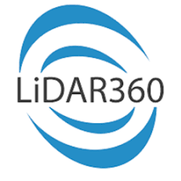
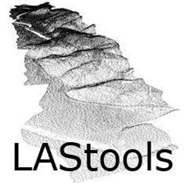

Con el objetivo de proveer información espacial sobre un área donde se realizaría una obra de ingeniería, se realizó el procesamiento de una nube de puntos, capturada a partir de un un dispositivo LiDAR montado sobre un Drone. El procesamiento comenzó luego del relevamiento, bajada y calibración de los datos; y contempla la limpieza de la nube, la clasificación de la misma, y finalmente la generación de productos derivados.
Se eliminaron los puntos considerados outliers, aquellos puntos aislados, que por su distancia a la nube no se consideran parte de la misma.
Se realizó un filtro y eliminación de todos los puntos considerados ruido, cualquier punto que no se ajuste al plano generado por los vecinos próximos, dada una determinada tolerancia, logrando una nube más suave.
Se clasificaron los puntos de suelo, primero por medio de una herramienta automática, logrando una primera estimación del terreno, y luego realizando una clasificación por selección.
Se clasificaron las edificaciones y vegetación por medio de herramientas de Machine Learning, generando una muestra de puntos sobre los cuales entrenar el modelo a correr.
Finalemente, se realizaron correcciones de las clases a empleando los perfiles, y se clasificaron el resto de los puntos a partir de su altura respecto al suelo.
Se generaron modelos digitales de terreno y elevación, y datos vectoriales como curvas de nivel.
A partir de los datos generados, se importaron a otros softwares de GIS y CAD, como Civil3D, para facilitar las tareas de diseño.